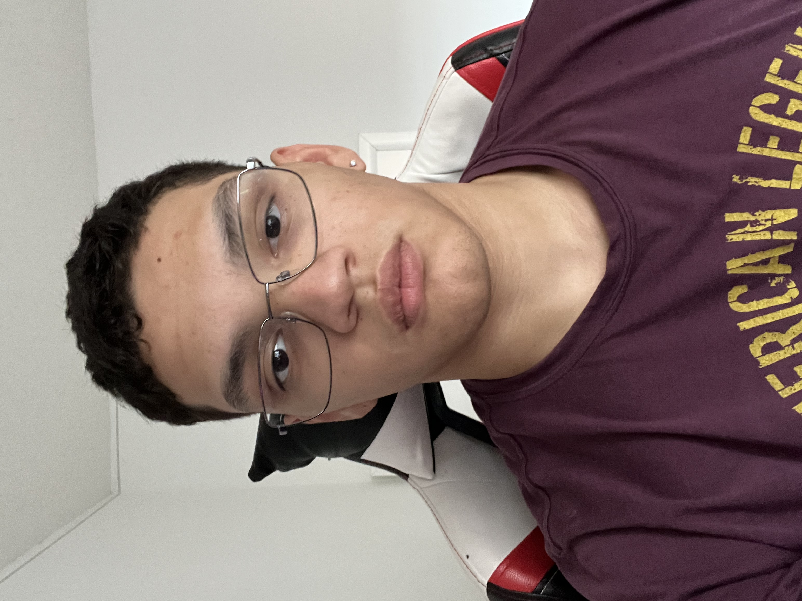

Luis Rosario

Synopsis:
Passionate and dedicated professional with a solid history of steering teams towards success through strategic thinking, strong leadership,
and creative problem-solving. Fluent in both English and Spanish, I bring a unique perspective to the table. Beyond my skills as an aspiring
web developer proficient in HTML, CSS, and JavaScript, I am also a former wrestling state qualifier, showcasing discipline and tenacity.
Eager to join a dynamic team where my diverse skill set and multilingual abilities can contribute to innovative solutions and propel the
organization to new heights. Excited about the opportunity to continue growing and learning in a collaborative and forward-thinking environment.
Education
- Tohopekaliga highschool
- (August 2019- May 2023)
- Kissimmee, FL 34744
- Highschool Diploma
Work Experience
- Juicing and Product Demo Specialist, Crossmark Connections, Orlando, FL 32832 (May 2023- October 2023)
- Contributed to cross-functional initiatives, including marketing events, enhancing brand awareness and customer engagement.
- Collaborated in a team to optimize juice production processes, showcasing adaptability and quick learning of new technologies.
- Resolved operational issues through problem-solving, ensuring seamless production and maintaining inventory accuracy.
- Wireless Specialist, T-ROC, Orlando, FL 32822 (October 2023- Present)
- Applied strong problem-solving skills to address technical inquiries and ensure customer satisfaction.
- Collaborated cross-functionally to enhance the overall customer experience and contribute to team goals.
- Excelled in customer-centric communication, promoting and selling cell phones and plans.
- Team Member, Arbys, Orlando, 32832 (June 2022- November 2023)
- Collaborated with diverse team members to achieve common goals, highlighting strong teamwork and communication skills.
- Prioritized and organized tasks to ensure smooth workflow, indicative of effective time management skills.
- Demonstrated efficiency and attention to detail in a fast-paced environment, essential traits for effective project management.
Skills/Acheivments
- State Qualifier in Wrestling | Team Captain
- Guided a wrestling team as Team Captain, demonstrating effective leadership, motivation, and teamwork—skills applicable to collaborative web development
projects.
- Attained the status of State Qualifier, showcasing discipline, determination, and goal-oriented focus—attributes transferable to navigating and completing
challenging web development tasks.
- Achieved State Qualifier status, demonstrating resilience and adaptability in a competitive setting—attributes applicable to problem-solving and navigating
challenges in web development projects.
- HTML, CSS, JavaScript
- Front-End Expertise: Proficient in HTML, CSS, and JavaScript, translating design concepts into responsive and visually appealing user interfaces. Adept
at creating seamless user experiences through clean and efficient code.
- Cross-Browser Compatibility: Demonstrated ability to ensure cross-browser compatibility and responsiveness, enhancing the accessibility and usability of web
applications. Implemented responsive design principles for optimal performance across various devices.
- Interactive User Functionality: Applied JavaScript to develop interactive and dynamic features, elevating user engagement and satisfaction. Utilized modern
frameworks and libraries to streamline development processes and enhance functionality.
- Python
- Backend Development: Proficient in Python for backend web development, utilizing frameworks such as Django or Flask to build robust and scalable server-side
applications. Experienced in designing and implementing RESTful APIs for seamless communication between front-end and back-end systems.
- Data Manipulation and Analysis: Applied Python for data manipulation and analysis, leveraging libraries like Pandas and NumPy. This skill set enhances the ability
to work with data-driven web applications, perform database operations, and derive meaningful insights for informed decision-making.
- Automation and Scripting: Demonstrated expertise in automating repetitive tasks and scripting using Python. Applied automation to streamline workflows, enhancing
efficiency in web development processes. Familiarity with tools like Selenium for web scraping and testing.
- Bilingual
- Fluent in both Spanish and English, facilitating effective communication with diverse teams and stakeholders. This skill is valuable for collaborating on international
projects, ensuring clear and concise communication throughout the web development lifecycle.
Hobbies
Contact Me